Calibration example¶
[1]:
import pandas as pd
import numpy as np
import re
import pickle
import matplotlib as mpl
import matplotlib.pyplot as plt
from matplotlib.ticker import MultipleLocator, FormatStrFormatter, AutoMinorLocator
from pathlib import Path
from scipy.stats import bootstrap
from radiocalibrationtoolkit import *
[2]:
# some ad-hoc plotting functions
def statistic_without_nans(col, func):
if func is not None:
return func(col.dropna())
else:
raise ValueError("Invalid function argument.")
def calculate_and_plot_with_true(df_true_sim_file_path, power_rec_DF):
power_sim_true_DF = pd.read_csv(df_true_sim_file_path[0], index_col=0)
power_sim_true_DF.columns = power_sim_true_DF.columns.astype(float)
frequencies_MHz = power_sim_true_DF.columns.values
slopes = []
intercepts = []
for i, freq in enumerate(power_sim_true_DF.columns):
x_arr = power_sim_true_DF.loc[:, freq].values
y_arr = power_rec_DF.loc[:, freq].values
intercept, slope = robust_regression(x_arr, y_arr)
intercepts.append(intercept)
slopes.append(slope)
intercepts = np.asarray(intercepts) ** (1 / 2)
slopes = np.asarray(slopes) ** (1 / 2)
fig, ax = plt.subplots(1, 2, figsize=(10, 4))
fig.suptitle(Path(df_true_sim_file_path[0]).stem)
ax[0].plot(frequencies_MHz, (slopes), marker="o", linestyle="")
median = np.median(slopes[~np.isnan(slopes)])
ax[0].axes.axhline(median, label="median={:.2f}".format(median), color="red")
ax[0].set_ylim(0.8, 1.2)
ax[0].set_xlabel("frequency [MHz]")
ax[0].set_ylabel("voltage \ncalibration parameter")
ax[0].xaxis.set_major_locator(MultipleLocator(10))
ax[0].legend()
ax[1].bar(frequencies_MHz, intercepts, width=1)
# ax[1].set_ylim(0, 5)
ax[1].set_xlabel("frequency [MHz]")
ax[1].set_ylabel("voltage \nnoise offset ")
ax[1].xaxis.set_major_locator(MultipleLocator(10))
fig.subplots_adjust(wspace=0.3, bottom=0.2)
def get_slope_and_intercepts_dfs(concatenated_df, power_rec_DF):
slopes_dict = {}
intercepts_dict = {}
for key in concatenated_df.index.levels[0]:
power_sim_DF = concatenated_df.xs(key)
frequencies_MHz = power_sim_DF.columns.values
slopes = []
intercepts = []
for i, freq in enumerate(power_sim_DF.columns):
x_arr = power_sim_DF.loc[:, freq].values
y_arr = power_rec_DF.loc[:, freq].values
intercept, slope = robust_regression(x_arr, y_arr)
intercepts.append(intercept)
slopes.append(slope)
slopes_dict[key] = np.asarray(slopes) ** (1 / 2)
intercepts_dict[key] = np.asarray(intercepts) ** (1 / 2)
slopes_DF = pd.DataFrame(slopes_dict).T
slopes_DF.columns = power_sim_DF.columns
intercepts_DF = pd.DataFrame(intercepts_dict).T
intercepts_DF.columns = power_sim_DF.columns
return slopes_DF, intercepts_DF
def bounds_from_slope_DF(slopes_DF, stat_func):
bounds = []
for col in slopes_DF.columns:
boot_res = bootstrap(
(slopes_DF.loc[:, col].values,),
stat_func,
n_resamples=1000,
confidence_level=0.68,
method="BCa",
)
bounds.append(
(boot_res.confidence_interval.low, boot_res.confidence_interval.high)
)
bounds = np.asarray(bounds).T
freq_dependent_slopes = slopes_DF.apply(statistic_without_nans, args=(stat_func,))
return freq_dependent_slopes, bounds
def plot_results_with_CI(slopes_DF, intercepts_DF, title="", labels=None):
# calculate
stat_func = np.mean
stat = "mean"
freq_dependent_slopes, bounds = bounds_from_slope_DF(slopes_DF, stat_func)
# this needs to be median, because at some frequencies there can be strong outliers
total_central_value = freq_dependent_slopes.median()
boot_res = bootstrap(
(freq_dependent_slopes.values,),
np.median,
n_resamples=1000,
confidence_level=0.68,
method="BCa",
)
bounds_total_central_value = (
boot_res.confidence_interval.low,
boot_res.confidence_interval.high,
)
# plot
fig, ax = plt.subplots(1, 2, figsize=(12, 5))
fig.suptitle(title)
if labels == None:
glabels = [k.split("_")[1] for k in slopes_DF.index.values]
else:
glabels = labels
ax[0].plot(
frequencies_MHz, slopes_DF.values.T, linestyle="-", alpha=0.1
) # , label=glabels)
ax[0].plot(
frequencies_MHz, slopes_DF.values.T, marker="o", linestyle="", markersize=3
) # , label=glabels)
ax[0].plot(
freq_dependent_slopes.index.values, freq_dependent_slopes.values, label=stat
)
ax[0].fill_between(
frequencies_MHz,
bounds[0,],
bounds[1,],
alpha=0.3,
label="68% CI",
)
ax[0].set_xlabel("frequency [MHz]")
ax[0].set_ylabel("voltage \ncalibration parameter")
ax[0].axes.axhline(
total_central_value,
color="grey",
lw=3,
label="Me(CP(f))={:.2f}".format(total_central_value),
)
ax[0].axes.axhspan(
bounds_total_central_value[0],
bounds_total_central_value[1],
color="grey",
alpha=0.3,
label="68% CI",
)
ax[0].legend(fontsize=12)
ax[1].plot(frequencies_MHz, intercepts_DF.values.T, label=glabels)
ax[1].set_ylim(0, 5)
ax[1].set_xlabel("frequency [MHz]")
ax[1].set_ylabel("voltage \nnoise offset ")
ax[1].xaxis.set_major_locator(MultipleLocator(10))
ax[1].legend(fontsize=12, ncol=2)
fig.subplots_adjust(
left=0.2,
bottom=0.2,
wspace=0.3,
)
return total_central_value
[3]:
# This ensures Plotly output works in multiple places:
# plotly_mimetype: VS Code notebook UI
# notebook: "Jupyter: Export to HTML" command in VS Code
# See https://plotly.com/python/renderers/#multiple-renderers
import plotly.io as pio
pio.renderers.default = "plotly_mimetype+notebook"
[4]:
# some global plot settings
plt.rcParams["axes.labelweight"] = "bold"
plt.rcParams["font.weight"] = "bold"
plt.rcParams["font.size"] = 16
plt.rcParams["legend.fontsize"] = 14
plt.rcParams["xtick.major.width"] = 2
plt.rcParams["ytick.major.width"] = 2
plt.rcParams["xtick.major.size"] = 5
plt.rcParams["ytick.major.size"] = 5
plt.rcParams["xtick.labelsize"] = 14
plt.rcParams["ytick.labelsize"] = 14
[5]:
# for this example you need to create a mock power dataframe and simulated sidereal power dataset
Calibrate with “true”¶
[6]:
# in this case the recorded is the mock dataset
power_rec_DF = pd.read_csv(
# "./mock_power_datasets/mock_power_dataset-Salla_EW_GSM16_N10000_temp30.0C_0.0additionalnoise_rounding-True.csv",
"./mock_power_datasets/mock_power_dataset-Salla_EW_GSM16_N10000_temp-10_50C_0.0additionalnoise_rounding-True.csv",
index_col=0,
)
# power_rec_DF.iloc[:, :] = power_rec_DF.values
# power_rec_DF = power_rec_DF.iloc[:, 30:80]
power_rec_DF.columns = power_rec_DF.columns.astype(float)
dir_path = "./simulated_power_datasets/"
df_files = [
os.path.join(dir_path, i) for i in os.listdir(dir_path) if (i.endswith(".csv") & i.startswith('Salla'))
]
power_sim_DF = pd.read_csv(df_files[-3], index_col=0)
# power_sim_DF.iloc[:, :] = power_sim_DF.values
power_sim_DF.columns = power_sim_DF.columns.astype(float)
[7]:
df_files[-3]
[7]:
'./simulated_power_datasets/Salla_GSM16.csv'
[8]:
# fit each band and make a plot overview
cmapT = plt.get_cmap("jet")
bounds = np.arange(30, 83, 2)
norm = mpl.colors.BoundaryNorm(bounds, cmapT.N)
fig, ax = plt.subplots(figsize=(8, 6))
frequencies_MHz = power_sim_DF.columns.values
slopes = []
intercepts = []
for i, freq in enumerate(power_sim_DF.columns):
c = [freq] * power_rec_DF.index.size
x_arr = power_sim_DF.loc[:, freq].values
y_arr = power_rec_DF.loc[:, freq].values
cs = ax.scatter(x_arr, y_arr, s=10, c=c, norm=norm, cmap="jet")
intercept, slope = robust_regression(x_arr, y_arr)
intercepts.append(intercept)
slopes.append(slope)
x_new = np.linspace(np.min(x_arr), np.max(x_arr), 100)
ax.plot(
x_new,
x_new * slope + intercept,
color=cmapT((freq - np.min(bounds)) * (bounds[1] - bounds[0]) / 100),
)
intercepts = np.asarray(intercepts) ** (1 / 2)
slopes = np.asarray(slopes) ** (1 / 2)
cbar = fig.colorbar(cs, ticks=np.arange(30, 81, 4), ax=ax)
cbar.set_label("Frequency [MHz]")
ax.set_xlabel("simulated power [pW]")
ax.set_ylabel("measured (mock) power [pW]")
fig.subplots_adjust(left=0.15, bottom=0.2)

[9]:
fig_data = pickle.dumps(fig)
fig2 = pickle.loads(fig_data)
# modify the axis limits of the copied figure
ax2 = fig2.axes
ax2[0].set_ylim(14, 55)
fig2
[9]:
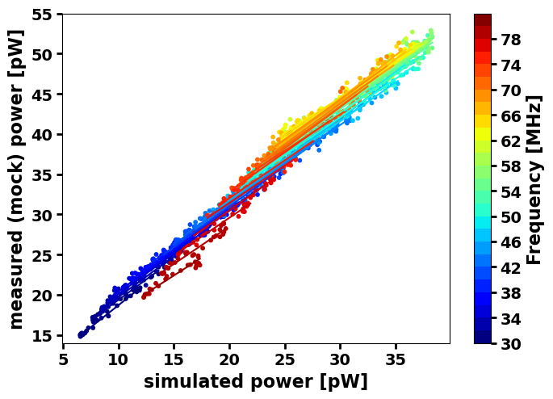
[10]:
calculate_and_plot_with_true([(df_files[-3])], power_rec_DF)
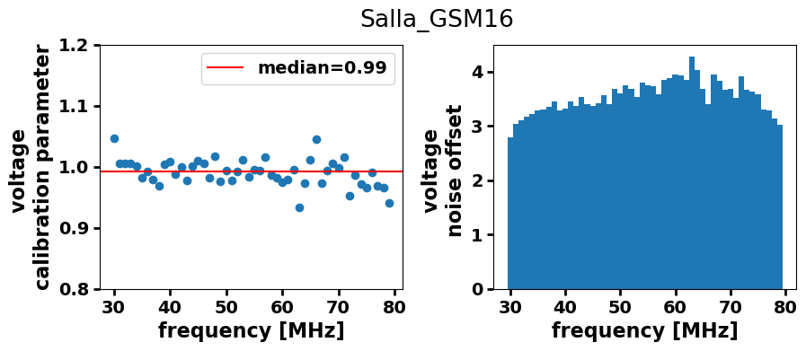
Calibrate with all ‘not true’ simulated datasets¶
[11]:
df_list = []
df_names = []
except_this = 'Salla_GSM16'
for f in df_files:
if except_this not in f:
df = pd.read_csv(f, index_col=0)
df.columns = df.columns.astype(float)
df_list.append(df)
df_names.append(Path(f).stem)
concatenated_sim_df = pd.concat(df_list, keys=df_names)
# check keys
[key for key in concatenated_sim_df.index.levels[0]]
[11]:
['Salla_GMOSS',
'Salla_SSM',
'Salla_Haslam',
'Salla_LFSS',
'Salla_ULSA',
'Salla_GSM08',
'Salla_LFmap']
[12]:
slopes_DF, intercepts_DF = get_slope_and_intercepts_dfs(concatenated_sim_df, power_rec_DF)
[13]:
plot_results_with_CI(slopes_DF, intercepts_DF, title="")
[13]:
0.935816948375442

Iteratively apply the previous procedure to all simulated datasets¶
[14]:
# for this example you need to create a mock power dataframe and simulated sidereal power dataset
[15]:
# plot results
def calculate_and_plot_results(df_sim_files, df_mock_files, df_true_sim_file_path):
print(df_sim_files, df_mock_files, df_true_sim_file_path)
# calculate
# read in all simulated datasets except the "true" one
df_list = []
df_names = []
for f in df_sim_files:
df = pd.read_csv(f, index_col=0)
df.columns = df.columns.astype(float)
df_list.append(df)
df_names.append(Path(f).stem)
concatenated_sim_df = pd.concat(df_list, keys=df_names)
# read-in rec dataset
power_rec_DF = pd.read_csv(
df_mock_files[0],
index_col=0,
)
power_rec_DF.columns = power_rec_DF.columns.astype(float)
# fitted with all others
slopes_DF, intercepts_DF = get_slope_and_intercepts_dfs(
concatenated_sim_df, power_rec_DF
)
median = plot_results_with_CI(slopes_DF, intercepts_DF, title="True: {}".format(gmodel))
# fitted with True
calculate_and_plot_with_true(df_true_sim_file_path, power_rec_DF)
return slopes_DF, intercepts_DF, median
[16]:
mock_datasets_path = "./mock_power_datasets/"
sim_datasets_path = "./simulated_power_datasets/"
galactic_models = [
"GSM16",
"LFSS",
"GSM08",
"Haslam",
"LFmap",
"SSM",
"GMOSS",
"ULSA",
]
pattern = "|".join(galactic_models)
antenna_model = "Salla"
all_slopes_dict = {}
all_intercepts_dict = {}
medians = np.array([])
for gmodel in galactic_models:
temp_galactic_models = galactic_models.copy()
temp_galactic_models.remove(gmodel)
re_string_mock = r"{}.*{}.*N10000.*-10_50.*csv".format(antenna_model, gmodel)
re_string_sim = r"{}.*{}.*csv".format(antenna_model, gmodel)
df_mock_files = [
os.path.join(mock_datasets_path, i)
for i in os.listdir(mock_datasets_path)
if re.search(re_string_mock, i)
]
pattern = "|".join(
["^{}.*".format(antenna_model) + s for s in temp_galactic_models]
)
df_sim_files = [
os.path.join(sim_datasets_path, i)
for i in os.listdir(sim_datasets_path)
if re.search(pattern, i) != None
]
df_true_sim_file_path = [
os.path.join(sim_datasets_path, i)
for i in os.listdir(sim_datasets_path)
if re.search(re_string_sim, i)
]
all_slopes_dict[gmodel], all_intercepts_dict[gmodel], m = calculate_and_plot_results(df_sim_files, df_mock_files, df_true_sim_file_path)
medians = np.append(medians, m)
# here should be the function
['./simulated_power_datasets/Salla_GMOSS.csv', './simulated_power_datasets/Salla_SSM.csv', './simulated_power_datasets/Salla_Haslam.csv', './simulated_power_datasets/Salla_LFSS.csv', './simulated_power_datasets/Salla_ULSA.csv', './simulated_power_datasets/Salla_GSM08.csv', './simulated_power_datasets/Salla_LFmap.csv'] ['./mock_power_datasets/mock_power_dataset-Salla_EW_GSM16_N10000_temp-10_50C_0.0additionalnoise_rounding-True.csv'] ['./simulated_power_datasets/Salla_GSM16.csv']
['./simulated_power_datasets/Salla_GMOSS.csv', './simulated_power_datasets/Salla_SSM.csv', './simulated_power_datasets/Salla_Haslam.csv', './simulated_power_datasets/Salla_ULSA.csv', './simulated_power_datasets/Salla_GSM16.csv', './simulated_power_datasets/Salla_GSM08.csv', './simulated_power_datasets/Salla_LFmap.csv'] ['./mock_power_datasets/mock_power_dataset-Salla_EW_LFSS_N10000_temp-10_50C_0.0additionalnoise_rounding-True.csv'] ['./simulated_power_datasets/Salla_LFSS.csv']
['./simulated_power_datasets/Salla_GMOSS.csv', './simulated_power_datasets/Salla_SSM.csv', './simulated_power_datasets/Salla_Haslam.csv', './simulated_power_datasets/Salla_LFSS.csv', './simulated_power_datasets/Salla_ULSA.csv', './simulated_power_datasets/Salla_GSM16.csv', './simulated_power_datasets/Salla_LFmap.csv'] ['./mock_power_datasets/mock_power_dataset-Salla_EW_GSM08_N10000_temp-10_50C_0.0additionalnoise_rounding-True.csv'] ['./simulated_power_datasets/Salla_GSM08.csv']
['./simulated_power_datasets/Salla_GMOSS.csv', './simulated_power_datasets/Salla_SSM.csv', './simulated_power_datasets/Salla_LFSS.csv', './simulated_power_datasets/Salla_ULSA.csv', './simulated_power_datasets/Salla_GSM16.csv', './simulated_power_datasets/Salla_GSM08.csv', './simulated_power_datasets/Salla_LFmap.csv'] ['./mock_power_datasets/mock_power_dataset-Salla_EW_Haslam_N10000_temp-10_50C_0.0additionalnoise_rounding-True.csv'] ['./simulated_power_datasets/Salla_Haslam.csv']
['./simulated_power_datasets/Salla_GMOSS.csv', './simulated_power_datasets/Salla_SSM.csv', './simulated_power_datasets/Salla_Haslam.csv', './simulated_power_datasets/Salla_LFSS.csv', './simulated_power_datasets/Salla_ULSA.csv', './simulated_power_datasets/Salla_GSM16.csv', './simulated_power_datasets/Salla_GSM08.csv'] ['./mock_power_datasets/mock_power_dataset-Salla_EW_LFmap_N10000_temp-10_50C_0.0additionalnoise_rounding-True.csv'] ['./simulated_power_datasets/Salla_LFmap.csv']
['./simulated_power_datasets/Salla_GMOSS.csv', './simulated_power_datasets/Salla_Haslam.csv', './simulated_power_datasets/Salla_LFSS.csv', './simulated_power_datasets/Salla_ULSA.csv', './simulated_power_datasets/Salla_GSM16.csv', './simulated_power_datasets/Salla_GSM08.csv', './simulated_power_datasets/Salla_LFmap.csv'] ['./mock_power_datasets/mock_power_dataset-Salla_EW_SSM_N10000_temp-10_50C_0.0additionalnoise_rounding-True.csv'] ['./simulated_power_datasets/Salla_SSM.csv']
['./simulated_power_datasets/Salla_SSM.csv', './simulated_power_datasets/Salla_Haslam.csv', './simulated_power_datasets/Salla_LFSS.csv', './simulated_power_datasets/Salla_ULSA.csv', './simulated_power_datasets/Salla_GSM16.csv', './simulated_power_datasets/Salla_GSM08.csv', './simulated_power_datasets/Salla_LFmap.csv'] ['./mock_power_datasets/mock_power_dataset-Salla_EW_GMOSS_N10000_temp-10_50C_0.0additionalnoise_rounding-True.csv'] ['./simulated_power_datasets/Salla_GMOSS.csv']
['./simulated_power_datasets/Salla_GMOSS.csv', './simulated_power_datasets/Salla_SSM.csv', './simulated_power_datasets/Salla_Haslam.csv', './simulated_power_datasets/Salla_LFSS.csv', './simulated_power_datasets/Salla_GSM16.csv', './simulated_power_datasets/Salla_GSM08.csv', './simulated_power_datasets/Salla_LFmap.csv'] ['./mock_power_datasets/mock_power_dataset-Salla_EW_ULSA_N10000_temp-10_50C_0.0additionalnoise_rounding-True.csv'] ['./simulated_power_datasets/Salla_ULSA.csv']
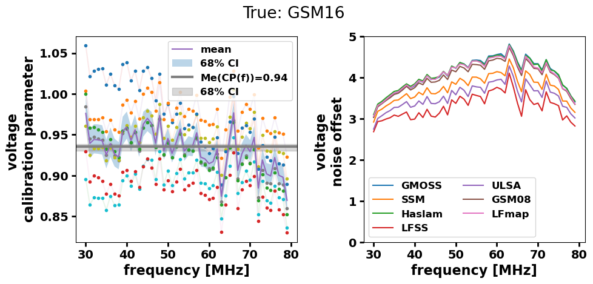
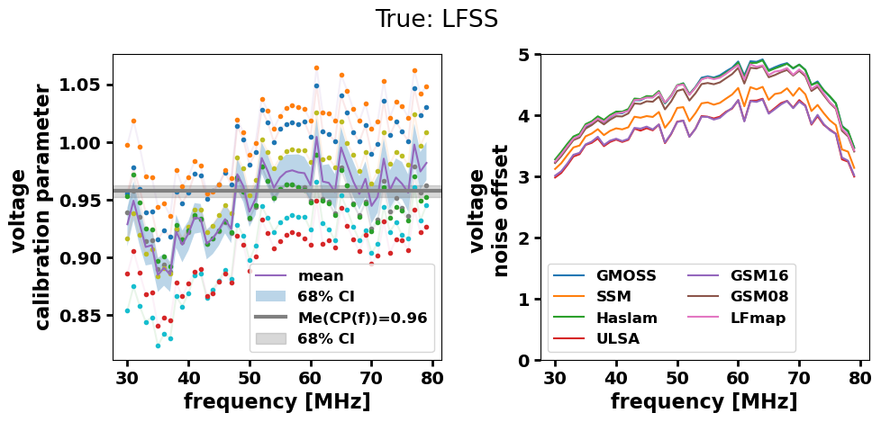
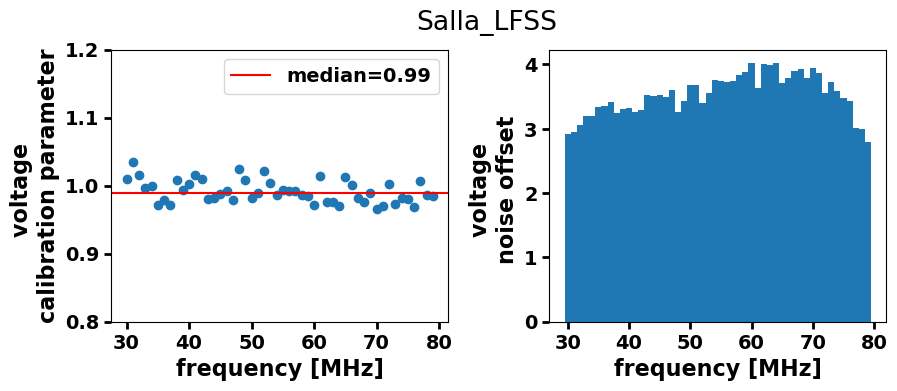
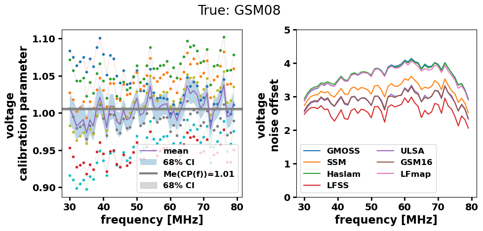
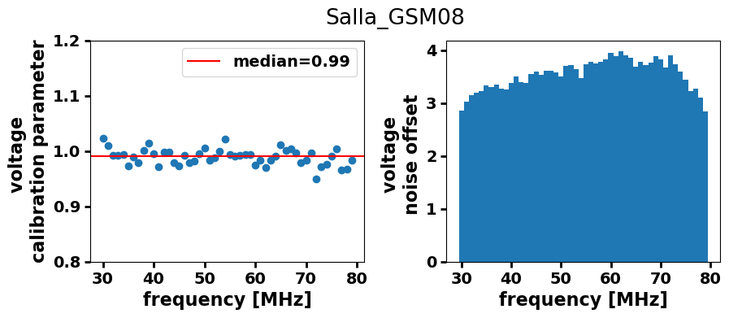
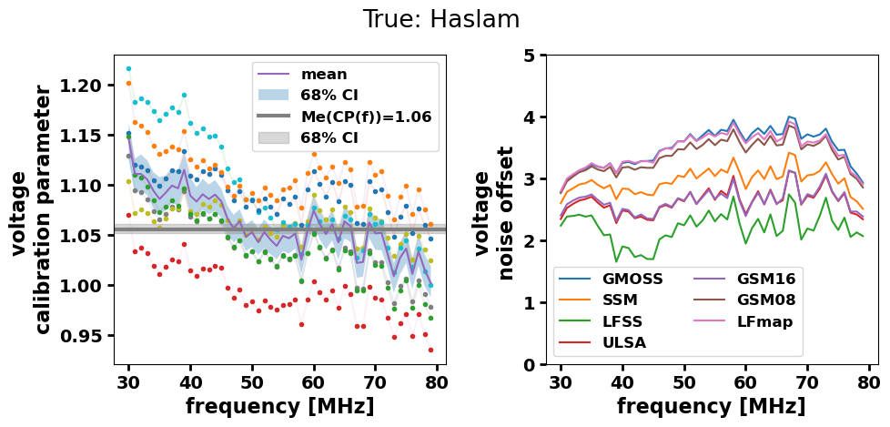
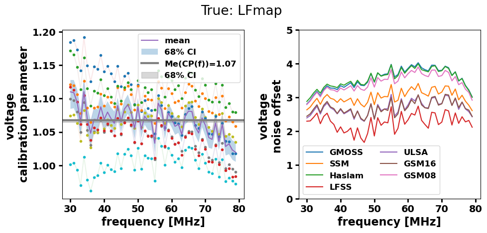
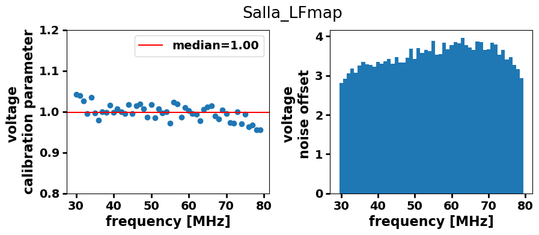
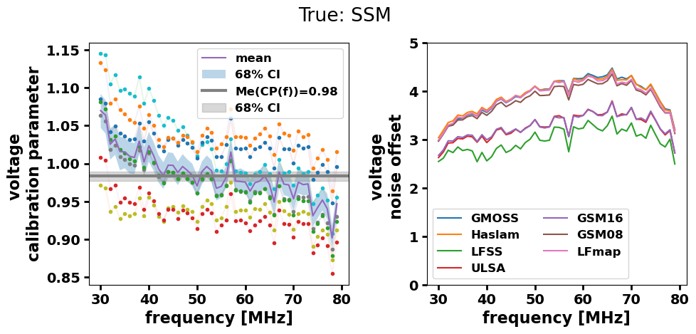
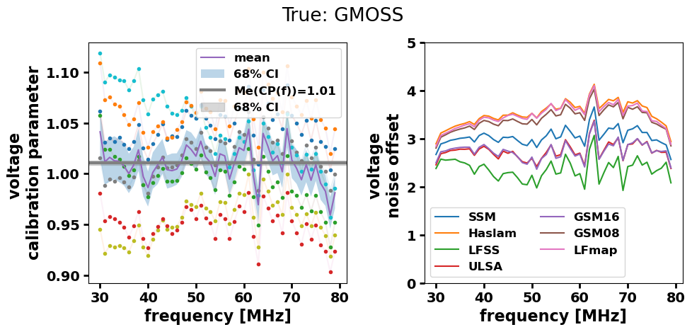
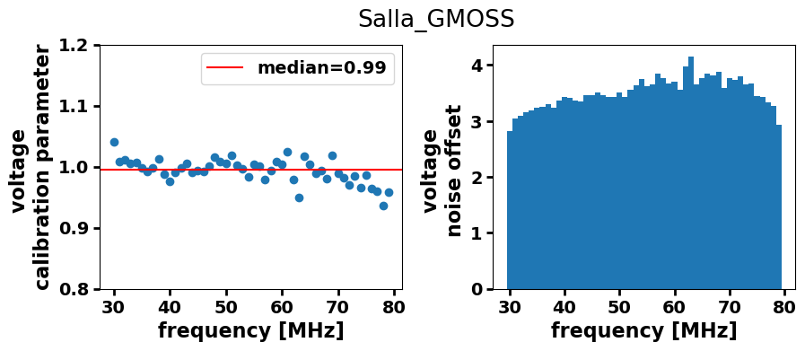
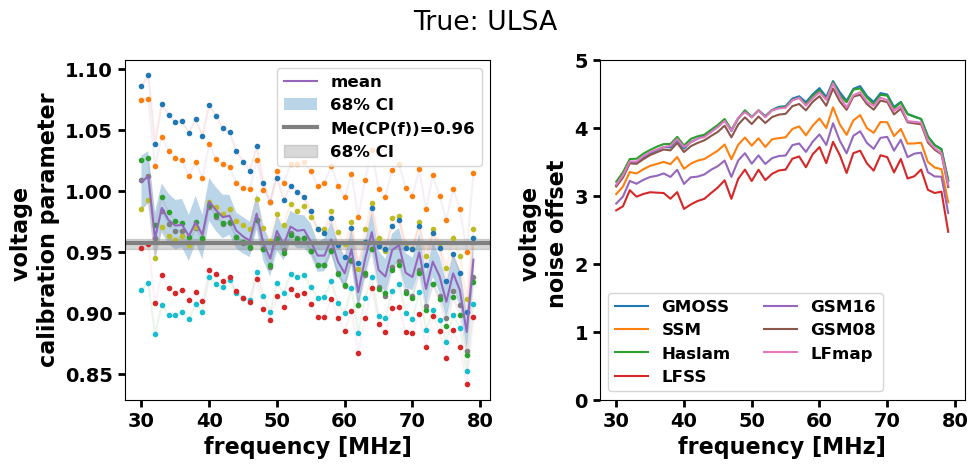
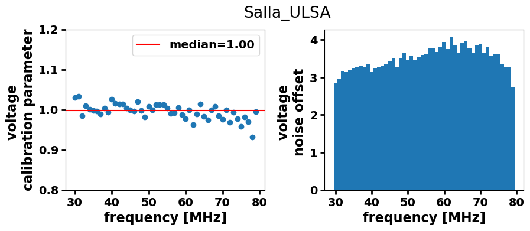
[17]:
all_slopes_df = pd.concat(all_slopes_dict)
all_intercepts_df = pd.concat(all_intercepts_dict)
freq_dependent_slopes, bounds = bounds_from_slope_DF(all_slopes_df, np.mean)
plot_results_with_CI(all_slopes_df, all_intercepts_df, title="All results together", labels='')
No artists with labels found to put in legend. Note that artists whose label start with an underscore are ignored when legend() is called with no argument.
[17]:
0.9981303170182356
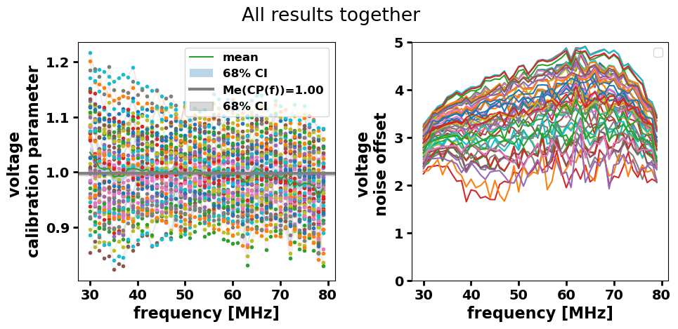
[18]:
fig, ax = plt.subplots()
ax.set_title('possible biases')
ax.hist(medians)
ax.set_xlabel('voltage calibration parameter')
ax.set_ylabel('Entries')
print(np.min(medians), np.max(medians))
0.935816948375442 1.067407868667611
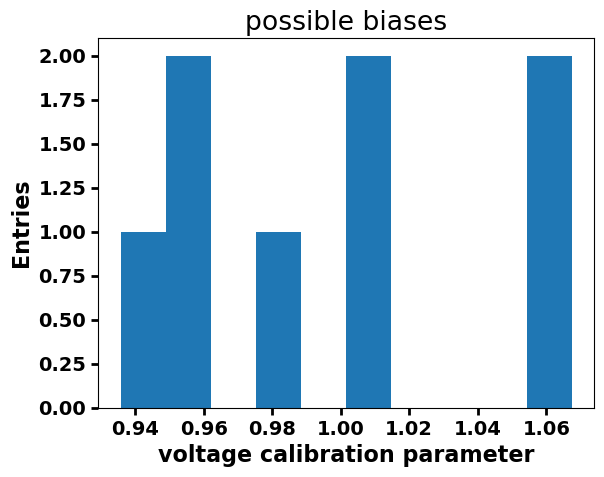
[19]:
data = (medians,) # samples must be in a sequence
props = dict(boxstyle='round', facecolor='wheat', alpha=0.5)
fig, ax = plt.subplots(1,2, figsize=(12,4))
res = bootstrap(data, np.mean, confidence_level=0.9)
bvalues = res.bootstrap_distribution
ax[0].hist(bvalues, bins=25)
ax[0].set_title('boostraped')
ax[0].set_xlabel(r'$<bias>$')
ax[0].text(0.05, 0.95, '$\mu$={:.2f}'.format(np.mean(bvalues)), transform=ax[0].transAxes, fontsize=14,
verticalalignment='top', bbox=props)
ax[1].set_title('boostraped')
res = bootstrap(data, np.std, confidence_level=0.9)
bvalues = res.bootstrap_distribution
ax[1].hist(bvalues, bins=25)
ax[1].set_xlabel('$\sigma$ bias')
ax[1].text(0.05, 0.95, '$\mu$={:.2f}'.format(np.mean(bvalues)), transform=ax[1].transAxes, fontsize=14,
verticalalignment='top', bbox=props)
[19]:
Text(0.05, 0.95, '$\\mu$=0.04')
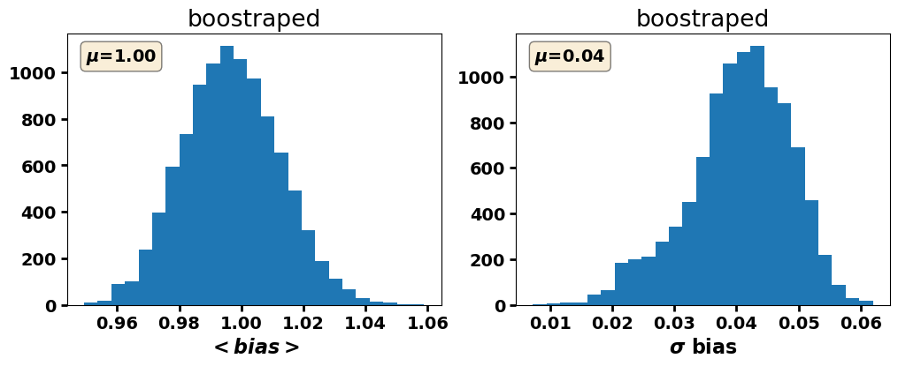
[ ]: